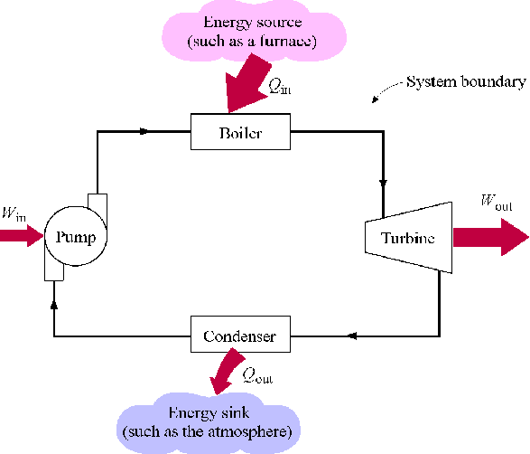
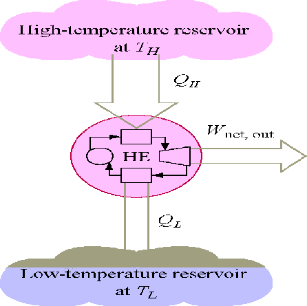
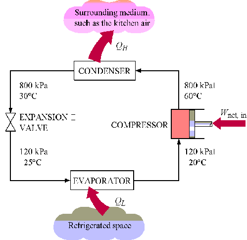
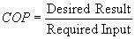
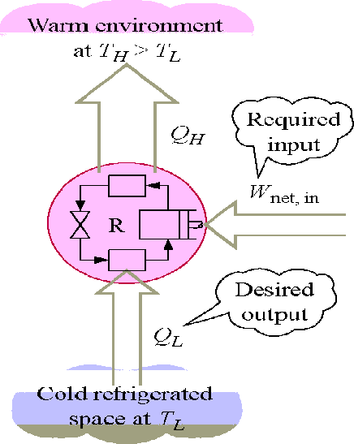
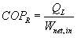
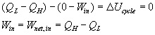
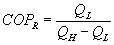
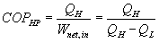
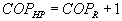

MÓDULO 10: MOTORES TÉRMICOS, REFRIGERADORES Y BOMBAS DE CALOR
(Fragmentos del CD que acompaña al libro de Cengel & Boles "Termodinámica", 3ª edición, McGraw-Hill, 1998)
Notas de clase (Inicio)
La Segunda Ley de la Termodinámica
La segunda ley de la termodinámica establece que los procesos ocurren en una dirección determinada, no en cualquier dirección. Los procesos físicos en la naturaleza pueden proceder hacia el equilibrio de forma espontánea:
- El agua fluye hacia abajo en una cascada.
- Los gases se expanden de una presión alta a una presión baja.
- El calor fluye de una temperatura alta a una temperatura baja.
Una vez que ha tenido lugar, un proceso espontáneo puede invertirse; pero no se invertirá espontáneamente. Se deben gastar algunos aportes externos, energía, para invertir el proceso. Al caer por la cascada, el agua puede recogerse en una rueda hidráulica, hacer girar un eje, enrollar una cuerda en el eje y levantar un peso. Así, la energía del agua que cae se captura como un aumento de la energía potencial en el peso, y se satisface la primera ley de la termodinámica. Sin embargo, existen pérdidas asociadas a este proceso (fricción). Permitir que el peso caiga, haciendo que el eje gire en la dirección opuesta, no bombeará toda el agua de regreso a la cascada. Los procesos espontáneos pueden proceder solo en una dirección particular. La primera ley de la termodinámica no proporciona información sobre la dirección; establece únicamente que cuando una forma de energía se convierte en otra, intervienen cantidades idénticas de energía independientemente de la viabilidad del proceso. Sabemos por experiencia que el calor fluye espontáneamente de una temperatura alta a una baja. Pero, el flujo de calor de una temperatura baja a una más alta sin gasto de energía para que el proceso ocurra no violaría la primera ley.
La primera ley se ocupa de la conversión de energía de una forma a otra. Los experimentos de Joule demostraron que la energía en forma de calor no podía convertirse completamente en trabajo; sin embargo, la energía de trabajo puede convertirse completamente en energía térmica. Evidentemente, el calor y el trabajo no son formas de energía completamente intercambiables. Además, cuando la energía se transfiere de una forma a otra, a menudo hay una degradación de la energía suministrada a una forma menos "útil". Veremos que es la segunda ley de la termodinámica la que controla la dirección que pueden tomar los procesos y cuánto calor se convierte en trabajo. Un proceso no ocurrirá a menos que satisfaga tanto la primera como la segunda ley de la termodinámica.
Algunas Definiciones
Para expresar la segunda ley de una forma manejable, necesitamos las siguientes definiciones.
Depósito de Calor (Térmico)
Un depósito de calor es un sistema suficientemente grande en equilibrio estable hacia el cual y desde el cual se pueden transferir cantidades finitas de calor sin ningún cambio en su temperatura.
Un depósito de calor de alta temperatura desde el cual se transfiere calor a veces se denomina fuente de calor. Un depósito de calor de baja temperatura al cual se transfiere calor a veces se denomina sumidero de calor.
Depósito de Trabajo
Un depósito de trabajo es un sistema suficientemente grande en equilibrio estable hacia el cual y desde el cual se pueden transferir cantidades finitas de trabajo de forma adiabática sin ningún cambio en su presión.
Ciclo Termodinámico
Un sistema ha completado un ciclo termodinámico cuando el sistema se somete a una serie de procesos y luego regresa a su estado original, de modo que las propiedades del sistema al final del ciclo son las mismas que al principio.
Por lo tanto, para números enteros de ciclos:
$$ p_f = p_i\, , \quad v_f = v_i\, , \quad T_f = T_i\, , \quad u_f = u_i\, , \quad h_f = h_i\, , \quad s_f = s_i $$Motor Térmico
Un motor térmico es un sistema termodinámico que opera en un ciclo termodinámico al cual se transfiere calor neto y del cual se entrega trabajo neto.
El sistema, o fluido de trabajo, se somete a una serie de procesos que constituyen el ciclo del motor térmico.
La siguiente figura ilustra una planta de energía de vapor como un motor térmico que opera en un ciclo termodinámico.

Eficiencia Térmica, \( \eta \)
La eficiencia térmica es el índice de rendimiento de un dispositivo que produce trabajo o un motor térmico y se define por la relación entre la salida de trabajo neto (el resultado deseado) y la entrada de calor (los costos para obtener el resultado deseado).
$$ \eta_T = \frac{\text{Resultado deseado}}{\text{Entrada requerida}} $$Para un motor térmico, el resultado deseado es el trabajo neto realizado y la entrada es el calor suministrado para que el ciclo funcione. La eficiencia térmica es siempre menor que 1 o menor que 100%.
$$ \eta_T = \frac{W_{net,out}}{Q_{in}} $$donde
$$ W_{net} = W_{out} - W_{in} $$ $$ Q_{in} \neq Q_{net} $$Aquí el uso de los subíndices in (entrada) y out (salida) significa usar la magnitud (tomar el valor positivo) de la transferencia de trabajo o calor y dejar que el signo menos en la expresión neta se encargue de la dirección.
Ahora aplique la primera ley al motor térmico cíclico.
$$ \begin{align} Q_{net,in} -W_{net,out} & = \Delta U \\ W_{net,out} & = Q_{net,in} \\ W_{net,out} & = Q_{in} - Q_{out} \end{align} $$La eficiencia térmica del ciclo se puede escribir como:
$$ \eta_T = \frac{W_{net,out}}{Q_{in}} = \frac{Q_{in} - Q_{out}}{Q_{in}} = 1 - \frac{Q_{out}}{Q_{in}} $$Los dispositivos cíclicos como motores térmicos, refrigeradores y bombas de calor a menudo funcionan entre un depósito de alta temperatura a temperatura \( T_H \) y un depósito de baja temperatura a temperatura \( T_L \) .

La eficiencia térmica del dispositivo anterior se convierte en:
$$ \eta_T = 1 - \frac{Q_{out}}{Q_{in}} = 1 - \frac{T_L}{T_H} $$
Bomba de Calor
Una bomba de calor es un sistema termodinámico que opera en un ciclo termodinámico que extrae calor de un cuerpo de baja temperatura y entrega calor a un cuerpo de alta temperatura. Para lograr esta transferencia de energía, la bomba de calor recibe energía externa en forma de trabajo o calor de los alrededores.
Si bien el nombre "bomba de calor" es el término termodinámico utilizado para describir un dispositivo cíclico que permite la transferencia de energía térmica de una temperatura baja a una más alta, usamos los términos "refrigerador" y "bomba de calor" para referirnos a dispositivos particulares. Aquí, un refrigerador es un dispositivo que opera en un ciclo termodinámico y extrae calor de medios de baja temperatura. La bomba de calor también opera en un ciclo termodinámico pero rechaza el calor a los medios de alta temperatura.
La siguiente figura ilustra un refrigerador como una bomba de calor que opera en un ciclo termodinámico.

Coeficiente de Rendimiento, COP
El índice de rendimiento de un refrigerador o bomba de calor se expresa en términos del coeficiente de rendimiento, COP, la relación entre el resultado deseado y la entrada. Esta medida de rendimiento puede ser mayor que 1 y queremos que el COP sea lo más grande posible.
$$ COP = \frac{\text{Resultado deseado}}{\text{Entrada requerida}} $$
Para la bomba de calor que actúa como un refrigerador o un aire acondicionado, la función principal del dispositivo es la transferencia de calor desde el sistema de baja temperatura.

Para el refrigerador, el resultado deseado es el calor suministrado a baja temperatura y la entrada es el trabajo neto en el dispositivo para que el ciclo funcione.
$$ COP_R = \frac{Q_L}{W_{net,in}} $$
Ahora aplique la primera ley al refrigerador cíclico.
$$ \begin{align} ( Q_L - Q_H ) - ( 0 - W_{in} ) & = \Delta U_{ciclo} \\ W_{in} & = W_{net,in} & = Q_{H} - Q_{L} & = Q_{net,in} \end{align}
Y el coeficiente de rendimiento se convierte en:
$$ COP_R = \frac{Q_L}{W_{net,in}} = \frac{Q_L}{Q_H - Q_L} $$
Para el dispositivo que actúa como una "bomba de calor", la función principal del dispositivo es la transferencia de calor al sistema de alta temperatura. El coeficiente de rendimiento para una bomba de calor es:
$$ COP_{HP} = \frac{Q_H}{W_{net,in}}= \frac{Q_H}{Q_H - Q_L} $$
Nota: bajo las mismas condiciones de operación, el $COP_{HP}$ y el $COP_R$ están relacionados por:
$$ COP_{HP} = 1 + COP_R $$